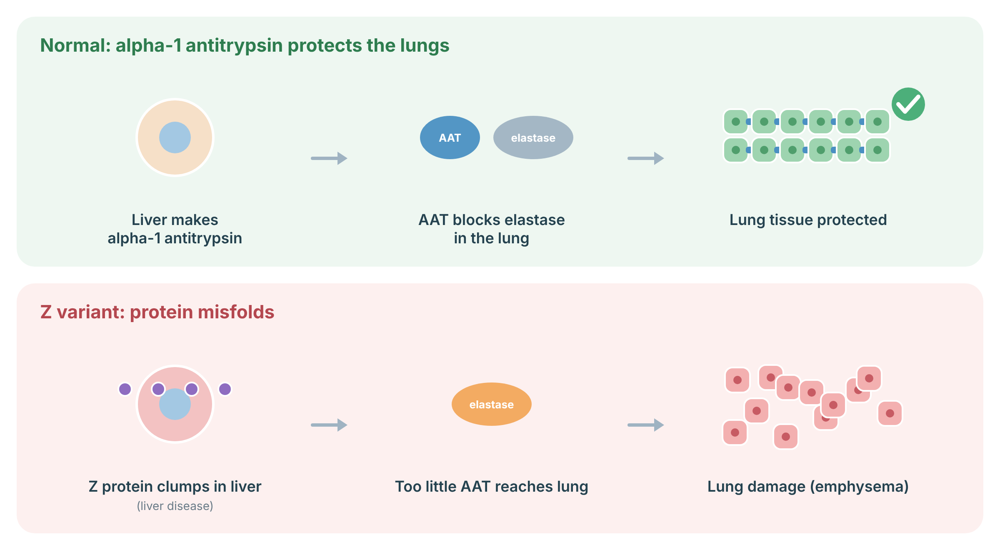
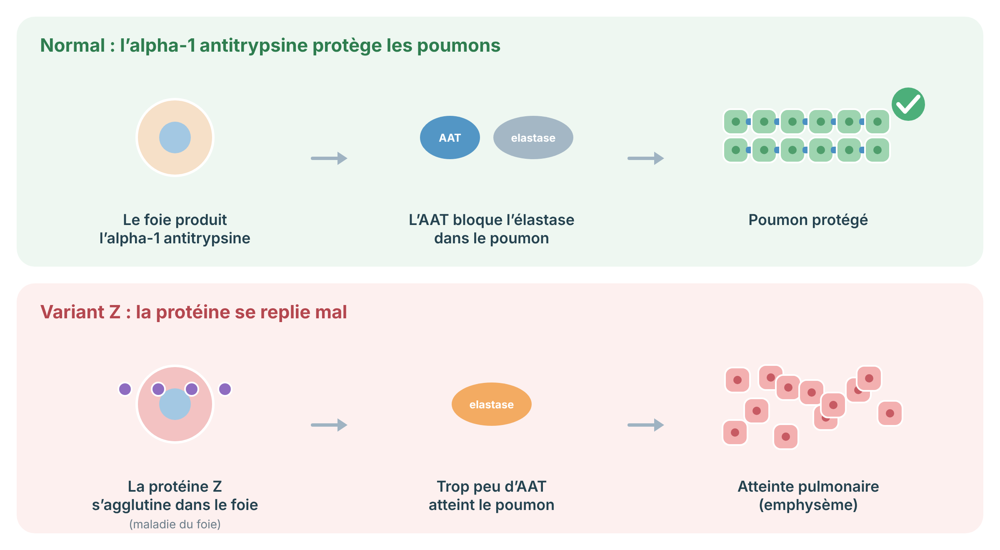

A protocol for SERPINA1-related alpha-1 antitrypsin deficiency: genotypes and risk, who to test, lung and liver care, augmentation therapy, and family testing.
Protocole pour le déficit en alpha-1 antitrypsine lié à SERPINA1 : génotypes et risques, qui tester, soins pulmonaires et hépatiques, thérapie d'augmentation et dépistage familial.
Alpha-1 antitrypsin (AAT) is a protein made in the liver that protects the lungs from damage. In alpha-1 antitrypsin deficiency, a change in the SERPINA1 gene means less protein reaches the lungs, and in some types the abnormal protein gets stuck in the liver. This can lead to emphysema at a younger age than usual — especially in people who smoke — and sometimes to liver disease. Not smoking is the single most important step.
L'alpha-1 antitrypsine (AAT) est une protéine fabriquée par le foie qui protège les poumons. Dans le déficit en alpha-1 antitrypsine, une modification du gène SERPINA1 fait en sorte que moins de protéine atteint les poumons et, dans certains types, la protéine anormale reste coincée dans le foie. Cela peut entraîner un emphysème à un âge plus jeune que d'habitude — surtout chez les fumeurs — et parfois une maladie du foie. Ne pas fumer est la mesure la plus importante.
Alpha-1 antitrypsin deficiency (AATD) is an autosomal codominant condition caused by variants in SERPINA1. The normal allele is M; the most clinically important deficiency alleles are Z (p.Glu342Lys) and S (p.Glu264Val). The Z protein misfolds and polymerises within hepatocytes (a toxic gain of function causing liver disease) and is poorly secreted (loss of function causing low serum levels and unopposed neutrophil elastase activity in the lung). Rare null alleles produce no protein and cause lung but not liver disease.
Le déficit en alpha-1 antitrypsine (DAAT) est une maladie autosomique codominante causée par des variants de SERPINA1. L'allèle normal est M; les allèles de déficit les plus importants cliniquement sont Z (p.Glu342Lys) et S (p.Glu264Val). La protéine Z se replie mal et polymérise dans les hépatocytes (gain de fonction toxique causant l'atteinte hépatique) et est mal sécrétée (perte de fonction causant des taux sériques bas et une activité non contrebalancée de l'élastase neutrophile dans le poumon). Les rares allèles nuls ne produisent aucune protéine et causent une atteinte pulmonaire sans atteinte hépatique.
| Genotype | Serum AAT | Clinical risk |
|---|---|---|
| Génotype | AAT sérique | Risque clinique |
| PI*ZZ | Severely reduced | High risk of early emphysema (greatly increased by smoking) and liver disease |
| PI*ZZ | Très diminuée | Risque élevé d'emphysème précoce (fortement accru par le tabagisme) et d'atteinte hépatique |
| PI*SZ | Moderately reduced | Increased lung risk, mainly in smokers; some liver risk |
| PI*SZ | Modérément diminuée | Risque pulmonaire accru, surtout chez les fumeurs; certain risque hépatique |
| PI*MZ | Mildly reduced | Small increase in lung risk in smokers; modifier of other liver disease |
| PI*MZ | Légèrement diminuée | Légère hausse du risque pulmonaire chez les fumeurs; modificateur d'autres maladies hépatiques |
| Null / null | Absent | Severe lung risk; no liver accumulation |
| Nul / nul | Absente | Risque pulmonaire sévère; pas d'accumulation hépatique |
Alpha-1 antitrypsin (AAT) is made in the liver and travels to the lungs, where it blocks neutrophil elastase, an enzyme that can damage lung tissue. The common Z variant makes AAT fold incorrectly: it clumps inside liver cells (which can damage the liver) and too little reaches the lungs (which raises the risk of emphysema, especially with smoking).

Sources: Strnad P, et al. N Engl J Med 2020;382:1443–55 (PubMed).
L’alpha-1 antitrypsine (AAT) est fabriquée par le foie et se rend aux poumons, où elle bloque l’élastase des neutrophiles, une enzyme qui peut abîmer le tissu pulmonaire. Le variant Z fréquent fait mal replier l’AAT : elle s’agglutine dans les cellules du foie (ce qui peut l’abîmer) et trop peu atteint les poumons (ce qui augmente le risque d’emphysème, surtout avec le tabac).

Sources : Strnad P, et al. N Engl J Med 2020;382:1443–55 (PubMed).
Testing is a simple blood test that measures the AAT level and identifies the gene type. It is recommended for everyone with COPD or emphysema, and for people with unexplained liver disease, among others.
Le test est une simple prise de sang qui mesure le taux d'AAT et identifie le type génétique. Il est recommandé pour toute personne atteinte de MPOC ou d'emphysème, et pour les personnes ayant une maladie du foie inexpliquée, entre autres.
Your lungs will be checked with breathing tests. Not smoking, avoiding dust and fumes, staying active, and keeping vaccinations up to date all help protect your lungs. Some people with severe deficiency and lung damage may benefit from weekly infusions of the missing protein.
Vos poumons seront évalués par des tests respiratoires. Ne pas fumer, éviter la poussière et les fumées, rester actif et garder vos vaccins à jour aident tous à protéger vos poumons. Certaines personnes avec un déficit sévère et une atteinte pulmonaire peuvent bénéficier de perfusions hebdomadaires de la protéine manquante.
Some people, especially those with the ZZ type, can develop liver scarring over time. Regular blood tests and sometimes a liver scan help find this early. Limiting alcohol and keeping a healthy weight protect the liver.
Certaines personnes, surtout celles de type ZZ, peuvent développer une cicatrisation du foie avec le temps. Des analyses sanguines régulières et parfois une échographie ou une élastographie du foie aident à la détecter tôt. Limiter l'alcool et maintenir un poids santé protègent le foie.
Brothers and sisters of a person with ZZ have a 1 in 4 chance of also having ZZ. Parents, children, and partners can also be tested to understand risks for the family and for future children.
Les frères et sœurs d'une personne de type ZZ ont une chance sur quatre d'être aussi ZZ. Les parents, les enfants et les conjoints peuvent aussi être testés pour comprendre les risques pour la famille et les futurs enfants.
Original diagrams are the work of the author (© 2026 Dr. Andrew Shuen).
Les schémas originaux sont l'œuvre de l'auteur (© 2026 Dr Andrew Shuen).